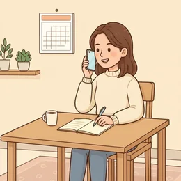
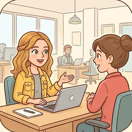
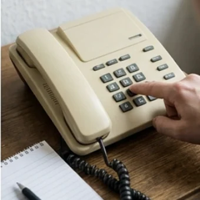
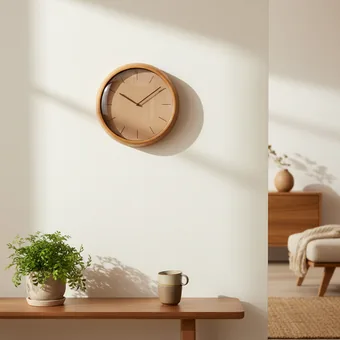
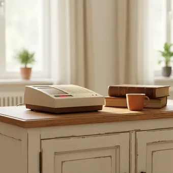
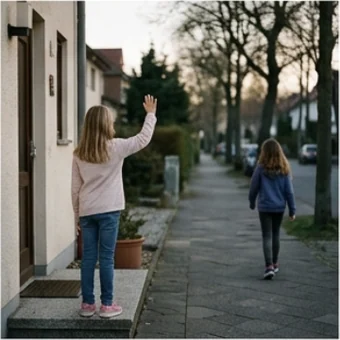

deutschoderwas · Sprechclub · Montag, 7. September
Telefonieren, ohne Angst
Das Telefon klingelt, und plötzlich ist das Deutsch weg. Heute lernst du die vier Sätze, mit denen du jedes Telefonat überstehst — und was du sagst, wenn du nichts verstanden hast.
Dein Niveau
Gleiches Thema, andere Sätze. Wechsle jederzeit — probier ruhig beides.
Es klingelt. Unbekannte Nummer.
Schaut euch das Bild an. Nimmst du ab — oder wartest du erst mal?

Wie oft telefonierst du auf Deutsch — jeden Tag, manchmal, nie?
Was ist schwerer: telefonieren oder von Angesicht zu Angesicht sprechen? Warum?
Bei wem hast du zuletzt angerufen?
Was war dein unangenehmstes Telefonat auf Deutsch — und wie ist es ausgegangen?
Warum ist Telefonieren schwerer als ein Gespräch im selben Raum?
Schreibst du lieber eine Mail, statt anzurufen? Was verlierst du dadurch?
🗣️ Sprecht reihum: „Ich telefoniere fast nie auf Deutsch, weil …“ · „Am schwersten finde ich, dass …“ · „Wenn ich nichts verstehe, sage ich …“
Und dann geht es sehr schnell
Am Telefon siehst du keinen Mund, keine Hände, kein Gesicht. Genau deshalb darfst du nachfragen, so oft du willst.

Was machst du, wenn jemand zu schnell spricht?
Wie sagst du deinen Namen, wenn er schwer zu verstehen ist?
Was schreibst du dir während eines Telefonats auf?
👀 Zu zweit: Setzt euch Rücken an Rücken und erzählt euch, was ihr heute gemacht habt. Genau so fühlt sich Telefonieren an — und genau so übt man es.
Zwölf Wörter für jedes Telefonat
Sagt jedes Wort laut — und gleich den Beispielsatz dazu. Diese Sätze brauchst du in genau dieser Reihenfolge.
anrufen
„Ich rufe wegen eines Termins an.“
💡 Trennbar: ich rufe an. Und: jemanden zurückrufen, wenn man später noch mal anruft.
sich melden
„Guten Tag, mein Name ist Kaya Demir.“
💡 Am Telefon sagt man immer zuerst den Namen — auch wenn man angerufen wird.

die Telefonnummer
„Unter welcher Nummer erreiche ich Sie?“
💡 Nummern sagt man einzeln: null — drei — zwei. Niemals „zweiunddreißig“ am Telefon.
🔤
buchstabieren
„Ich buchstabiere: D wie Dora, E wie Emil …“
💡 Nimm einfache Vornamen als Hilfe: A wie Anna, B wie Berta. Das versteht jeder.
notieren
„Moment, ich notiere das kurz.“
💡 Sag es ruhig laut. „Moment“ gibt dir Zeit — und niemand legt auf.
der Termin
„Ich hätte gern einen Termin.“
💡 Feste Wendungen: einen Termin machen, vereinbaren, verschieben, absagen.

die Uhrzeit
„Geht es am Dienstag um halb zehn?“
💡 Am Telefon lieber „neun Uhr dreißig“ als „halb zehn“ — das wird seltener falsch verstanden.

der Anrufbeantworter
„Ich spreche Ihnen auf den Anrufbeantworter.“
💡 Kurz halten: Name, Grund, Nummer. Und die Nummer am Ende zweimal sagen.
📶
die Verbindung
„Die Verbindung ist schlecht, ich rufe noch mal an.“
💡 Der perfekte Satz, wenn du nichts verstehst: du gibst niemandem die Schuld und bekommst einen zweiten Versuch.
die Unterlagen
„Welche Unterlagen soll ich mitbringen?“
💡 Nur Plural. Dazu passen: der Ausweis, die Versichertenkarte, der Brief.
die Praxis
„Praxis Dr. Weber, guten Tag!“
💡 So meldet sich die andere Seite fast immer: Firma oder Praxis, dann Name, dann Gruß.

Auf Wiederhören
„Vielen Dank, auf Wiederhören!“
💡 Am Telefon sagt man Wiederhören, nicht Wiedersehen. Man sieht sich ja nicht.
💡 Spiel: Verdeckt die Wörter. Eine Person beschreibt eines („Das Ding, das rangeht, wenn niemand da ist …“), die anderen raten — und bilden sofort einen Satz damit.
Die vier Sätze, die immer gehen
In dieser Reihenfolge: melden, Anliegen, nachfragen, verabschieden. Mehr brauchst du nicht.
1 · 📞 Sich melden Guten Tag, mein Name ist …Hier ist …Spreche ich mit …?
So klingt esGuten Tag, mein Name istKaya Demir.
2 · 🎯 Sagen, was du willst Ich rufe an wegen …Ich hätte gern einen Termin.Ich habe eine Frage zu …
So klingt esIch rufe an wegen eines Termins.
3 · 🆘 Nachfragen Wie bitte?Können Sie das wiederholen?Etwas langsamer, bitte.Wie schreibt man das?
So klingt esEntschuldigung, können Sie das bitte wiederholen?
4 · 👋 Schluss machen Vielen Dank!Dann bis Dienstag.Auf Wiederhören!
So klingt esVielen Dank, dann bis Dienstag. Auf Wiederhören!
1 · 📞 Sich melden — mit Anliegen in einem Satz Guten Tag, hier spricht …Ich rufe an, weil …Es geht um …
So klingt esGuten Tag, hier spricht Kaya Demir. Ich rufe an, weil ich einen Termin verschieben möchte.
2 · 🔁 Absichern, dass du richtig verstanden hast Habe ich das richtig verstanden: …?Also am Dienstag um …, richtig?Ich fasse kurz zusammen:
So klingt esHabe ich das richtig verstanden — am Dienstag um halb zehn?
3 · ⏳ Zeit gewinnen, ohne unhöflich zu werden Einen Moment, bitte.Darf ich mir das kurz notieren?Könnten Sie kurz warten?
So klingt esEinen Moment bitte — darf ich mir das kurz notieren?
4 · ⚡ Wenn es nicht klappt Die Verbindung ist schlecht.Ich rufe gleich noch einmal an.Könnten Sie mich zurückrufen?
So klingt esDie Verbindung ist schlecht — ich rufe gleich noch einmal an.
Verb das Anliegen Zeit und Zahl Höflichkeit
🗣️ Sofort anwenden: Jeder sagt die vier Sätze einmal am Stück, ohne Pause. Erst dann ist der Nächste dran. Es geht nicht um schön — es geht um flüssig.
Vier Telefonate — zwei Runden
Runde 1: Lest den ganzen Dialog zu zweit, am besten Rücken an Rücken. Runde 2: Tippt auf den Knopf — deine Sätze verschwinden, du siehst nur noch, was du sagen sollst.
Dialog 1 · „Einen Termin machen“
Du hast seit drei Tagen Halsschmerzen und rufst in der Praxis an.
A
Praxis Dr. Weber, Meier am Apparat, guten Tag!
B
Guten Tag, mein Name ist Kaya Demir. Ich hätte gern einen Termin.
🗣️ Melde dich mit Namen und sag in einem Satz, was du willst.tippen = Hilfe zeigen
A
Waren Sie schon einmal bei uns?
B
Ja, im Frühling. Demir, D wie Dora, E wie Emil, M wie Martha, I wie Ida, R wie Richard.
🗣️ Antworte kurz — und buchstabiere deinen Namen.tippen = Hilfe zeigen
A
Danke. Dienstag um neun Uhr dreißig, geht das?
B
Moment, ich notiere das kurz. Dienstag, neun Uhr dreißig — ja, das passt.
🗣️ Verschaff dir einen Moment, wiederhole die Zeit und sag zu.tippen = Hilfe zeigen
A
Sehr gut. Bringen Sie bitte Ihre Versichertenkarte mit.
B
Mache ich. Vielen Dank, auf Wiederhören!
🗣️ Bestätige und verabschiede dich.tippen = Hilfe zeigen
Dialog 2 · „Ich habe nichts verstanden“
Die Person am anderen Ende spricht schnell und undeutlich. Du bleibst ruhig.
A
…und dann bräuchten wir noch die Bescheinigung vom Sechsundzwanzigsten.
B
Entschuldigung, können Sie das bitte wiederholen? Etwas langsamer.
🗣️ Frag nach — höflich, aber deutlich.tippen = Hilfe zeigen
A
Die Bescheinigung. Vom sechsundzwanzigsten August.
B
Wie schreibt man das — Be-schei-ni-gung?
🗣️ Frag nach der Schreibweise, Silbe für Silbe.tippen = Hilfe zeigen
A
Genau richtig. B-E-S-C-H-E-I-N-I-G-U-N-G.
B
Danke. Habe ich das richtig verstanden: die Bescheinigung vom 26. August?
🗣️ Fass zusammen und lass dir bestätigen, dass es stimmt.tippen = Hilfe zeigen
A
Ganz genau. Schicken Sie die einfach per Post.
B
Alles klar, das mache ich heute noch. Vielen Dank für Ihre Geduld!
🗣️ Sag, was du tun wirst — und bedank dich.tippen = Hilfe zeigen
Dialog 3 · „Auf den Anrufbeantworter sprechen“
Niemand geht ran. Nach dem Piepton hast du dreißig Sekunden.
A
Sie haben die Praxis Dr. Weber erreicht. Bitte hinterlassen Sie eine Nachricht nach dem Signalton.
B
Guten Tag, hier spricht Kaya Demir.
🗣️ Fang mit Gruß und Namen an — langsam und deutlich.tippen = Hilfe zeigen
A
— piep —
B
Ich rufe an, weil ich meinen Termin am Dienstag verschieben möchte.
🗣️ Sag in einem Satz, warum du anrufst.tippen = Hilfe zeigen
A
— läuft weiter —
B
Sie erreichen mich unter null eins fünf eins, zwei drei vier fünf sechs sieben. Ich wiederhole: null eins fünf eins, zwei drei vier fünf sechs sieben.
🗣️ Nenne deine Nummer — einzeln und zweimal.tippen = Hilfe zeigen
A
— gleich vorbei —
B
Vielen Dank und auf Wiederhören.
🗣️ Kurzer Schluss, fertig.tippen = Hilfe zeigen
Dialog 4 · „Falsch verbunden — und trotzdem weiterkommen“
Du wolltest die Hausverwaltung und landest im Sekretariat einer Firma.
A
Nowak Bauelemente, guten Morgen.
B
Guten Morgen. Entschuldigung, ich glaube, ich bin falsch verbunden. Ich wollte die Hausverwaltung Berger.
🗣️ Grüß, entschuldige dich kurz und sag, wen du eigentlich suchst.tippen = Hilfe zeigen
A
Da haben Sie sich vertippt, die Nummer ist ähnlich.
B
Das tut mir leid. Hätten Sie vielleicht die richtige Nummer?
🗣️ Bleib freundlich — und frag, ob dir jemand weiterhelfen kann.tippen = Hilfe zeigen
A
Die endet auf vier acht, nicht auf vier drei.
B
Vier acht statt vier drei — ich notiere das. Ganz herzlichen Dank!
🗣️ Wiederhole, was du gehört hast, und bedank dich.tippen = Hilfe zeigen
🎭 Und jetzt ihr: Spielt Dialog 1 noch einmal — aber die Person am Empfang spricht sehr schnell und hat wenig Zeit. B bleibt ruhig und fragt so oft nach, wie nötig. Wer aufgibt, fängt von vorne an.
🧩 Trennbare Verben am Telefon
anrufen, zurückrufen, aufschreiben — die Vorsilbe rutscht ans Satzende. Genau diese Verben brauchst du heute.
Bei einem trennbaren Verb wandert der erste Teil ans Ende des Satzes. Aus anrufen wird: Ich rufe morgen an. Das klingt seltsam, ist aber immer gleich — und nach zehn Sätzen macht man es von allein.
🙋WerIch
▾
📞Verbrufe · schreibe · lege
▾
🕘Wannmorgen früh
▾
🔚Vorsilbean. · auf. · auf.
WerIch
Verbrufe
Wannmorgen früh
Vorsilbean
Die Falle: zusammen oder getrennt?
Im normalen Satz getrennt. Nach einem Modalverb und im Nebensatz bleibt das Verb ganz.
✅ Richtig
Ich rufe Sie morgen an.
WarumNormaler Satz: Verb auf Platz 2, Vorsilbe ganz hinten.
❌ Falsch
Ich anrufe Sie morgen.
MerkenZusammen steht es nur im Wörterbuch — nie im einfachen Satz.
✅ Richtig
Ich möchte Sie morgen anrufen.
WarumNach möchte, kann, muss, will bleibt das Verb ganz — und geht ans Ende.
❌ Falsch
Ich möchte Sie morgen rufen an.
MerkenGetrennt wird nur, wenn das Verb selbst gebeugt ist.
Tippe die Teile in der richtigen Reihenfolge an. Danach auf „prüfen“.
📖 Und jetzt im Zusammenhang
Wähle in jeder Lücke das passende Wort.
Zwei Anhaltspunkte, mehr brauchst du nicht:
1. Hörst du die Betonung vorne? — ÁNrufen, ÁUFschreiben. Dann ist es trennbar.
2. Ist die Vorsilbe ein eigenes Wörtchen? — an, auf, ab, mit, zu, ein, zurück. Dann fast immer trennbar.
Gegenbeispiel: verSTÉhen, beKÓMmen — Betonung hinten, also nicht trennbar.
Und falls du dich verhaspelst: sag den Satz einfach zu Ende. Am Telefon korrigiert dich niemand.
🎭 Drei Telefonate
Zu zweit, Rücken an Rücken. Einer ruft an, einer nimmt ab — dann tauschen. Höchstens zwei Minuten pro Runde.
1 · Termin beim Amt
Du brauchst einen Termin im Bürgeramt. Es ist besetzt, dann geht doch jemand ran — und hat es eilig.
Guten Tag, mein Name ist …Ich hätte gern einen Termin.Geht es auch am Nachmittag?Vielen Dank, auf Wiederhören!
Ich rufe an, weil ich …Wäre auch ein Termin am Nachmittag möglich?Habe ich das richtig verstanden: …?Was muss ich mitbringen?
✅ Eine gute Runde enthälteine Meldung mit Namen, das Anliegen in einem Satz und eine Rückfrage, bevor du auflegst.
2 · Krank melden
Du bist krank und rufst bei der Arbeit oder in der Schule an. Du erreichst nur den Anrufbeantworter.
Hier ist …Ich bin heute krank.Ich komme morgen wieder.Auf Wiederhören.
Ich melde mich krank für heute und voraussichtlich morgen.Die Krankmeldung schicke ich per Post.Bei Fragen erreichen Sie mich unter …
✅ Eine gute Runde enthältName, Grund, wie lange — und deine Nummer am Ende, langsam und zweimal.
3 · Die Verbindung ist schlecht
Mitten im Gespräch bricht es ab, du verstehst nur noch jedes zweite Wort.
Wie bitte?Ich verstehe Sie schlecht.Ich rufe noch einmal an.
Die Verbindung ist gerade sehr schlecht.Darf ich Sie gleich zurückrufen?Falls es wieder abbricht: …
✅ Eine gute Runde enthälteinen Satz, der niemandem die Schuld gibt, und einen klaren Plan, wie es weitergeht.
🎴 Sprechkarten
Zieh eine Karte und sprich mindestens vier Sätze am Stück.
Deine Aufgabe
Tippe auf den Knopf.
⏱️ Die 90-Sekunden-Challenge
Ein Wort, anderthalb Minuten, freies Sprechen. Es muss nicht perfekt sein — es muss weitergehen.
Dein Wort
anrufen
1:30
Erzähl einfach der Reihe nach, was passiert:
Wer ruft an? — Ich rufe bei … an, weil …
Wer nimmt ab? — Eine Frau meldet sich mit …
Was ist das Problem? — Ich verstehe nicht, ob …
Wie endet es? — Am Ende haben wir …
Und wenn ein Wort fehlt: beschreib es. „So ein Gerät, das rangeht, wenn niemand da ist.“ Genau das ist die Fähigkeit, die am Telefon zählt.
⏱️ Spielregel: Wer stehen bleibt, darf einmal „ähm“ sagen und weitermachen. Wer aufhört, gibt weiter. Ziel ist nicht Fehlerfreiheit — Ziel ist, dass der Satz nicht abbricht.
✅ Sitzt es schon?
8 Fragen. Tippe auf deine Antwort — die Erklärung kommt sofort.
✍️ Lückentext
Wähle in jeder Lücke das passende Wort.
📣 Danach laut: Lest den fertigen Lückentext einmal komplett vor — erst langsam, dann in normalem Tempo. Das ist der Unterschied zwischen „verstanden“ und „kann ich sagen“.
📮 Deine Hausaufgabe bis Mittwoch
Vier kleine Aufgaben, zusammen etwa 25 Minuten. Hak ab, was du geschafft hast.
💡 Warum das hilft: Telefonieren übt man nicht durch Lesen. Drei der vier Aufgaben bringen dich dazu, wirklich zu sprechen — und die vierte ist ein echter Anruf.
0 von 0 Aufgaben geschafft.
So könnte deine Nachricht klingen:
„Guten Tag, hier spricht Kaya Demir.“
„Ich rufe an wegen meines Termins am Dienstag.“
„Sie erreichen mich unter null eins fünf eins — zwei drei vier — fünf sechs sieben.“
„Ich wiederhole: null eins fünf eins — zwei drei vier — fünf sechs sieben.“
„Vielen Dank und auf Wiederhören.“
Merk dir die Reihenfolge: Name → Grund → Nummer → Gruß. Immer gleich.
Wie bitte? · Entschuldigung, das habe ich nicht verstanden.
Könnten Sie das bitte wiederholen? · Etwas langsamer, bitte.
Wie schreibt man das? · Können Sie das buchstabieren?
Habe ich das richtig verstanden, dass …? · Also am Dienstag, richtig?
Meinen Sie … oder …? · Darf ich kurz zusammenfassen?
Die letzten beiden sind die stärksten: Wer zusammenfasst, hat das Gespräch in der Hand — und wirkt nicht unsicher, sondern gründlich.
📬 Abgabe: Schick deine Sprachnachricht bis Mittwoch früh in die Community — Julia hört sie sich an und antwortet dir. Wenn du lieber für dich übst: auch gut. Dann bring eine Frage mit, die beim Üben aufgetaucht ist.